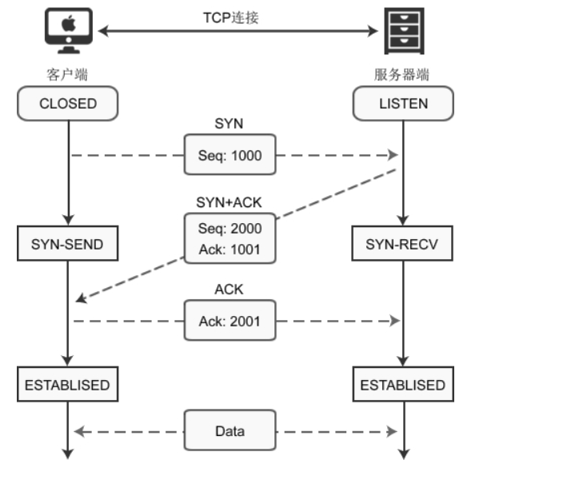

计算机网络
计算机网络
1.计算机网络定义
计算机网络是指将地理位置不同的具有独立功能的多台计算机及其外部设备通过通信线路链接起来,实现资源共享和信息传统
2.计算机网络的组成
- 资源子网:提供软件资源和硬件资源
- 通信子网:提供信息交换的网络结点和通信线路
3.计算机网络类型
3.1按拓扑类型分类
- 星型结构
- 树形结构
- 总线型结构
- 环形结构
- 网状结构
3.2按范围分类
LAN(局域网):如校园网
MAN(城域网):如一个城市的网络
WAN(广域网):如一个国家的网络
*补充: *
PAN个人区域网
Internet互联网
3.3 按传输方式分类
(1)有线网络
IEEE802.3
(2)无线网络
IEE802.11 WLAN(无线局域网) WPAN(无线个人区域网)
4.计算机网络体系结构
4.1传输方式
- 单工:只能单方向传输的工作模式
- 双工:在同一时间内,线路上只能允许一个方向的数据通过
- 全双工:双方可以同时进行数据通信
4.2传输对象
- 单播:一对一
- 多播:一对多
- 广播:一对all
4.3数据交换
- 电路交换:整个报文从头到尾连续的传输
- 报文交换:整个报文先传送道相邻结点,全部存储下来查找转发,再转发到下一个结点
- 分组交换:将一个报文分成多个分组,传送到相邻结点,再查找转发到下一个结点
5.通信协议和体系结构
网络协议三要素: 语法 语义 时序
5.1 OSI 7层参考模型
网络设备详解:交换机,集线器,网桥,路由器,网关的区别

下层为上层服务
物理层:
单位为bit,利用传送介质为通信结点之间的建立
两种信号:数字信号,模拟信号
设备:,中继器,集线器(多个中继器的集合)
编码和调制
- 编码:将信号转换成数字信号
- 调制:将信号转换成模拟信号
传输介质
双绞线
制作标准:
568B:橙白橙,绿白蓝,蓝白绿,棕白棕
568A:13调换,26调换
光纤
- 同轴电缆
- 无线
物理层-香农公式与奈式准则
香农公式(重点)
香农（Shannon）提出并严格证明了“在被高斯白噪声干扰的信道中，计算最大信息传送速率C公式”：
==C=W log 2(1+S/N)。==式中：
C是最大信息传送速率(bps,比特每秒)
W是信道带宽（赫兹,Hz），
S是信道内所传信号的平均功率（瓦），
N是信道内部的高斯噪声功率（瓦）。
**香农公式中的S/N是为信号与噪声的功率之比，为无量纲单位。(如果没分贝单位的信噪比可直接代入上式)**如：S/N=1000（即，信号功率是噪声功率的1000倍）
但是，当讨论信噪比时，常以分贝（dB）为单位。公式如下：
例题:电话系统的典型参数是信道带宽为3000Hz,信噪比为30dB,则该系统最大数据传输速率是多少?
30dB = 10log 2 (S/N) 则S/N = 1000 , c = 3000 x log2(1000+1) 约等于 = 30000bps 即 30kb/s
奈式准则
奈奎斯特(Nyquist)推导出在理想低通(无噪声,带宽受限)下的最高码元传输速率的公式:理想低通信道的最高码元传输速率 = 2W Baud
上式就是著名的奈氏准则.奈氏准则的另一种表达方法是:每赫带宽的理想低通信道的最高码元传输速率是每秒2个码元.
==理想低通信道下的极限数据传输速率 c = 2W log2 V (单位:b/s)==
其中:
W 为信道带宽.单位为Hz,
V 为几种码元或者离散电平数目
注:奈式准则给出了码元传输速率的限制,但没用对信息传输速率给出限制,所以要想提高数据的传输速率就必须设法使每个码元携带更多个比特信息量,这就需要采用多元制的调制方法
例题:
数据链路层:
单位:帧,建立在物理层的基础上,提供结点到结点之间的服务,采取差错控制和流量控制的方法实现网络互联
寻址依据:Mac地址,硬件地址,由网卡决定,全球唯一
设备:网桥, 交换机(多个网桥的集合)
帧的概念
帧:数据链路层的协议数据单元
帧的组成
- 帧头:源mac地址,目的mac地址,类型
- 数据
- 帧尾:校验
以太网数据帧中的mac和LLC
MAC:物理地址,用于对接网络层
LLC:逻辑控制访问,用于对接物理层
局域网中的设备
集线器(Hub)–物理层:把对接收到的信号进行整形放大,以扩大网络的传输距离,同时在把所有结点集中到以他为中心的节点上
**交换机(Swtich)—数据链路层:**是一种用于电(光)信号转发的网络设备,他可以为接入交换机的任意两个网络提供独享的电信号通路
**网桥:**两个接口,可链接两个冲突域
数据链路层-通信协议
**冲突域:**采用物理协议,只能发生在同一网段,如交换机同一端口属于一个冲突域
广播域: 采用数据链路协议,可跨网段发生,如同一台交换域属于广播域
注:同一中冲突共享带宽
vlan(虚拟局域网)
是一个物理LAN(局域网)在逻辑上划分为多个广播域的通信技术,vlan内的主机可以直接通信,而vlan间不能直接通信,从而将广播报文限制在一个vlan内
优点及目的:
- 划分广播域–减少垃圾数据
- 增强局域网的安全性
- 提高健壮性
- 灵活构建工作组
划分vlan方式:
基于端口,有三种模式,
Access(只允许通过一个vlan)
Trunk(允许通过多个vlan)
Hybrid
基于子网
基于Mac地址
基于协议
基于匹配策略
CRC
循环冗余校验（Cyclic Redundancy Check， CRC）是一种根据网络数据包或计算机文件等数据产生简短固定位数校验码的一种信道编码技术，主要用来检测或校验数据传输或者保存后可能出现的错误。它是利用除法及余数的原理来作错误侦测的。
CSMA/CD
PPP
点对点协议（Point to Point Protocol，PPP）为在点对点连接上传输多协议数据包提供了一个标准方法。PPP 最初设计是为两个对等节点之间的 IP 流量传输提供一种封装协议。在 TCP-IP 协议集中它是一种用来同步调制连接的数据链路层协议（OSI模式中的第二层），替代了原来非标准的第二层协议，即 SLIP。除了 IP 以外 PPP 还可以携带其它协议，包括 DECnet 和 Novell 的 Internet 网包交换（IPX）。
网络层(提供路由,网络互联):
数据的基础单位 : 数据包
单位:分组 ,提供点到点之间的通信,提供路由功能,实现拥塞控制,网络互联等功能
寻址依据:ip地址,IP地址由网络拓扑结构决定,根据ARP(地址解析协议,将ip映射到mac地址)来实现寻址
作用:实现两个端系统之间的数据透明,链接的建立,保持和终止等,他提供服务使传输层不需要了解网络中的数据传输和交换技术
设备:路由器
网络层-ip协议
- ARP(地址解析协议):
- RARP(反地址解析协议)
- ICMP(网络控制报文协议)
- IGMP(网络组管理协议)
网络层-IP地址
ip地址由网络拓扑结构决定,是IP协议提供的一种同一地址格式,他为互联网上的每一个网络每一台主机分配一个逻辑地址,以此来屏蔽物理地址(Mac)的差异
ip地址组成:4个字节,32位组成,一般用点分法十进制表示
IP地址组成
IP地址由网络号和主机号组成
网络号:标识某一个网段的地址
主机号:标识某一个台设备的地址
**子网掩码:**和IP地址配套使用,用于区分IP地址的网络号和主机号
子网掩码中网络号为全1,主机号全0
ip地址分类
A类默认子网掩码为255.0.0 .0 B类默认子网掩码为255.255.0.0 C类默认子网掩码为255.255.255.0
特殊地址:
- 网络地址:主机号全为0不可用
- 广播地址:主机号全为1不可用
- 回环地址:127.0.0
IP地址类型以及规模
A类地址,用于大规模网网段,可容纳127(2^7 -1)个网段,每个网段课容纳16777214台主机
B类地址,用于中型网段,可容纳16384(2^14 - 1)个网段,每个网段可容纳65534台主机
C类地址,用于小型网段,可分配2097151个网段,每个网段容纳254台主机
子网划分(重点)
划分子网时会将原来地址的主机号划分成网络号(子网号)
比如,192.168.1.0 24(24代表前24位为网络号)
192.168.1. 0000 0000 ,后8位位主机号,此网段可容纳254(2^8-2)台主机
192.168.1.0 25 ,两者是不一样的,后者将前者原本的主机号再次进行划分形成了两个子网
子网一:192.168.1.==0==000 0000 ,该子网可容纳主机数为126(2^7-2)
子网二:192.168.1.==1==000 0000 ,该子网可容纳主机数为126(2^7-2)
网络层-路由
路由:路由是指分组从源到目的地时,决定端到端路径的网络范围的进程,路由是指导报文,转发的路径信息,通过路由可以确认转发ip报文的路径
**路由器:**网络层的基本设备,负责数据转发,一个端代表一个网段,路由器中存放着通往网段各个网段的表格,即路由表
**网关(Gateway):**又称网间连接器,协议转换器,用于两个高层协议不同网络互连,网关,既可以用于广域网互连,也可以用于局域网互连
路由的方式:
直连路由:直连路由是由链路层协议发现的，一般指去往路由器的接口地址所在网段的路径，直连路由无需手工配置，只要接口配置了网络协议地址同时管理状态、物理状态和链路协议均为UP时，路由器能够自动感知该链路存在，接口上配置的IP网段地址会自动出现在路由表中且与接口关联，并动态随接口状态变化在路由表中自动出现或消失。
静态路由:静态路由是由网络管理员根据网络拓扑，使用命令在路由器上配置的路由，这些静态路由信息指导报文发送，静态路由方式也无需路由器进行计算，但它完全依赖于网络管理员的手动配置。
补充一下，默认路由是一种特殊的静态路由,网络管理管理员手工配置了默认路由后，当路由表中与目的地址之间没有匹配的表项时路由器将把数据包发送给默认网关。(一般用于小型变化不大的网络)
动态路由:动态路由是指路由器能够自动地建立自己的路由表，且能根据网络拓扑状态变化进行动态调整。动态路由机制依赖于对路由表的维护以及路由器间动态的路由信息交换。路由器间的路由信息交换是基于路由协议实现的，交换路由信息的最终目的是通过路由表找到“最佳”路由。
(一般用于大型网络)
动态路由协议:待补充
传输层(建立链接进行可靠通信,端到端):
数据基本单位: 数据报
提供端与端(端口号)之间的之间的数据传输协议,实现对数据进行控制和操作的功能,服务于应用层
负责维护两个结点之间的会话建立维护和断开,以及数据的交换
端口号:
在一台计算机中,每个应用程序对应一个端口号
常见端口号:
- FTP(文件传输协议): 21 , 20
- 数据口端口号: 20
- 控制口端口号: 21
- (电子邮箱传输协议,发送邮件):
- SMTP协议, 发送邮件端口号: 25 ,
- POP3(邮局协议版本3,**接收邮件,客户端接收后服务器删除邮件)端口号: 110 ; **
- IMAP4,客户端接收邮件后服务器也不删除, 端口:143 ,
- TFTP(简单文件传输协议): 69
- HTTP(超文本传输协议): 80
- HTTPS(超文本安全传输协议): 443
- DNS(域名解析服务器): 53
- DHCP(动态主机配置协议):68
- TomCat服务器: 8080
- SNMP(简单网络管理协议): 161
- TELNET(远程登陆): 23
传输层-两个重要协议:TCP,UDP
TCP(传输控制协议):
==一次http请求过程: 在通常情况下,服务端返回给浏览器数据成功后就断开链接了无需等待浏览器解析页面 ; 除非在请求头进行特殊设置才会一直保持链接==
TCP是TCP/IP体系中较为复杂的协议,是传输层中最重要的协议.
特点:
- 面向连接的传输层协议
- 面向字节流
- 提供可靠的交付服务
- 提供全双工通信
三次握手(建立链接)与四次挥手(解除链接)
参考文章:https://blog.csdn.net/weixin_45393094/article/details/104965561
TCP三次握手:
①首先 Client 端发送连接请求报文
②Server 段接受连接后回复 ACK 报文，并为这次连接分配资源。
③Client 端接收到 ACK 报文后也向 Server 段发生 ACK 报文，并分配资源，这样 TCP 连接就建立了。

为什么要进行三次握手?
1、在第一次通信过程中，A向B发送信息之后，B收到信息后可以确认自己的收信能力和A的发信能力没有问题。
2、在第二次通信中，B向A发送信息之后，A可以确认自己的发信能力和B的收信能力没有问题，但是B不知道自己的发信能力到底如何，所以就需要第三次通信。
3、在第三次通信中，A向B发送信息之后，B就可以确认自己的发信能力没有问题。
4、 小结：3次握手完成两个重要的功能，==既要双方做好发送数据的准备工作(双方都知道彼此已准备好)==，也要允许双方就初始序列号进行协商，这个序列号在握手过程中被发送和确认。
TCP四次挥手
建立连接非常重要，它是数据正确传输的前提；断开连接同样重要，它让计算机释放不再使用的资源。如果连接不能正常断开，不仅会造成数据传输错误，还会导致套接字不能关闭，持续占用资源，如果并发量高，服务器压力堪忧。
//过程描述
- A：“任务处理完毕，我希望断开连接。”
- B：“哦，是吗？请稍等，我准备一下。”
- 等待片刻后……(可能是因为B数据还没传输完)
- B：“我准备好了(B已经把数据传输完毕)，可以断开连接了。”
- A：“好的，谢谢合作。”
为什么连接的时候是三次握手，关闭的时候却是四次握手？
①因为当Server端收到Client端的SYN连接请求报文后，可以直接发送SYN+ACK报文。其中ACK报文是用来应答的，SYN报文是用来同步的。
②但是关闭连接时，当Server端收到FIN报文时，很可能并不会立即关闭SOCKET，所以只能先回复一个ACK报文，告诉Client端，“你发的FIN报文我收到了”。
③==只有等到我Server端所有的报文都发送完了==，我才能发送FIN报文，因此不能一起发送。故需要四步握手。
UDP(用户数据报协议)
应用场景:主要是对数据完整性要求不高的场景
特点:
- UDP是无连接的(无须对方答复即可传输)
- 尽最大努力交付(不一定可靠)
- 面向报文没有拥塞控制
- 开销较小效率较高
会话层:
利用传输层提供的服务，使应用建立和维持会话，并能使会话获得同步。会话层使用校验点可使通信会话在通信失效时从校验点继续恢复通信。这种能力对于传送大的文件极为重要。
表示层:
用于处理交互数据的表示方式**,例如格式的转换,数据的加密和解密,数据压缩和恢复等功能**
应用层:
使用应用层序通过网络服务,为用户服务
应用层-常见协议
DNS(域名系统)
域名结构:每个域名用逗号隔开,如www.baidu.com, 三级域名,二级域名,顶级域名
一个域名对应一个ip,但是一个ip可以有多个域名(即可通过多个域名找到同一个网站)
域名的迭代查询和递归查询:
**递归查询:**如果本地DNS服务器无法解析域名的IP，则本地DNS服务器向其他根DNS服务器发出查询请求。递归查询返回的==查询结果只有 IP地址 和 无法查询的报错 两种可能。==
迭代查询：当根DNS服务器收到本地DNS服务器发出的迭代查询请求报文时，返回的结果是 ==IP地址或是顶级DNS服务器地址==，而本地DNS服务器再向顶级DNS服务器查询。顶级服务器一是如此，直到最后得到解析的IP地址或报错，本地DNS服务器再把报错还给查询主机。
总的来说，递归查询是 客户端只发起一次请求，返回结果只有查询成功或失败；迭代查询会返回最佳查询点或主机地址。
DHCP(动态主机配置协议)
DHCP协议: 指的就是由服务器控制一段IP地址范围,客户机登陆服务器时就可以自动获得服务器分配得ip地址和子网掩网, 端号: 68